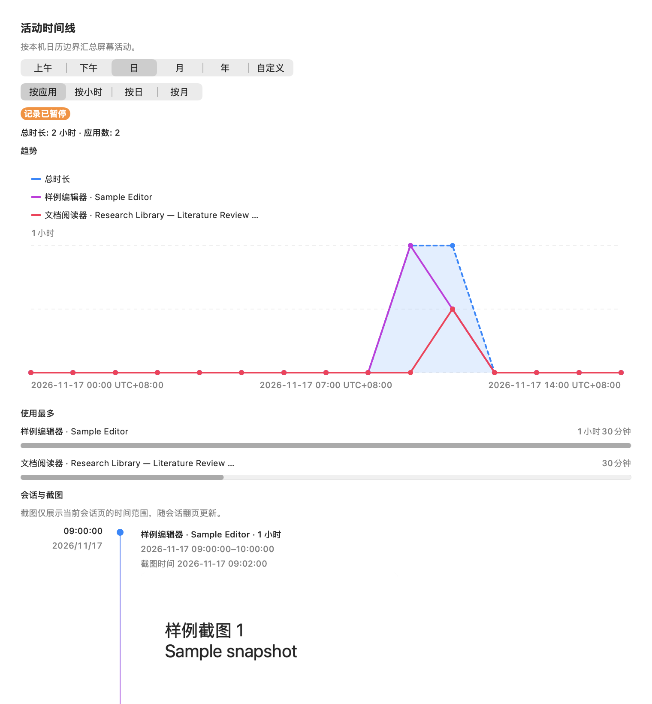
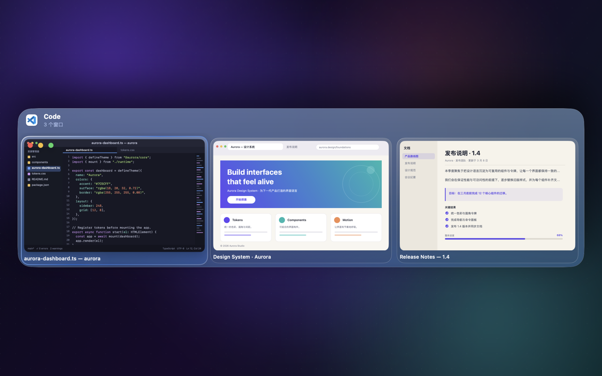
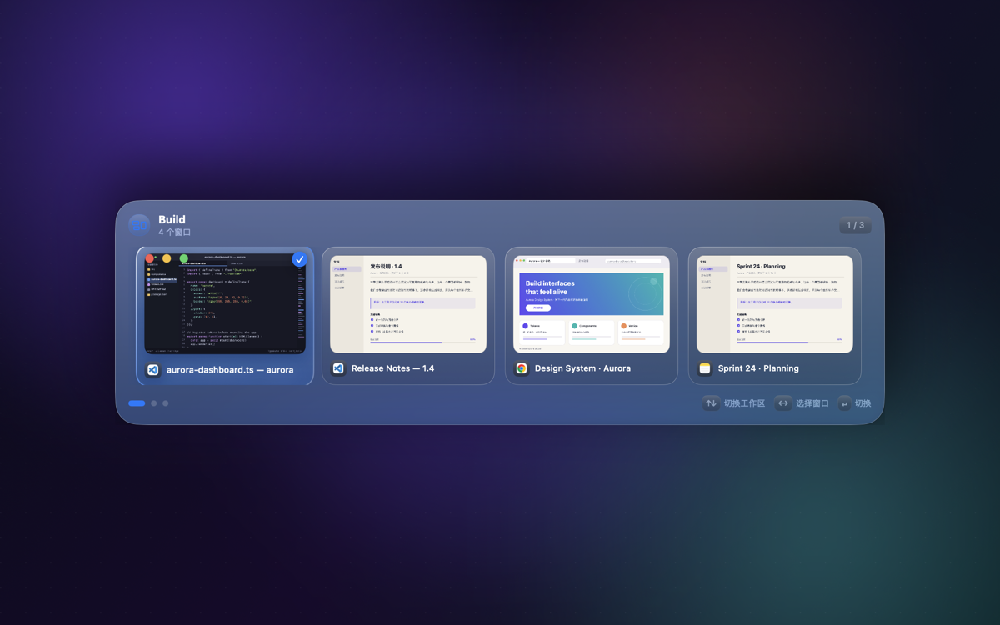
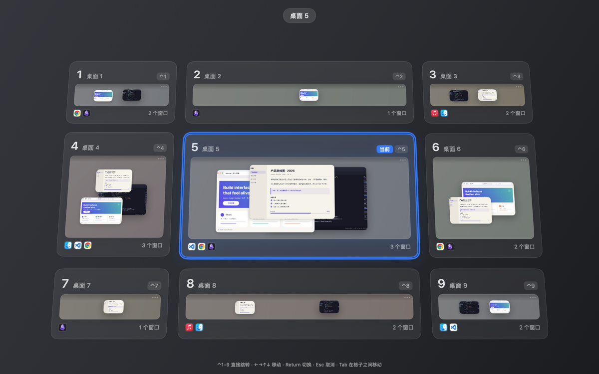
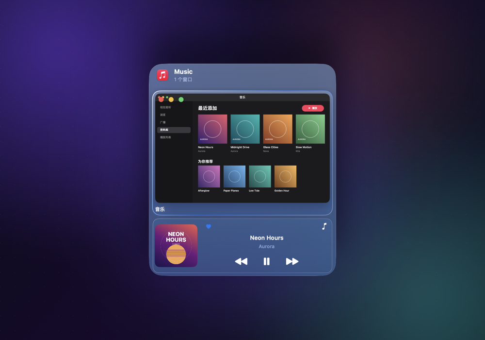
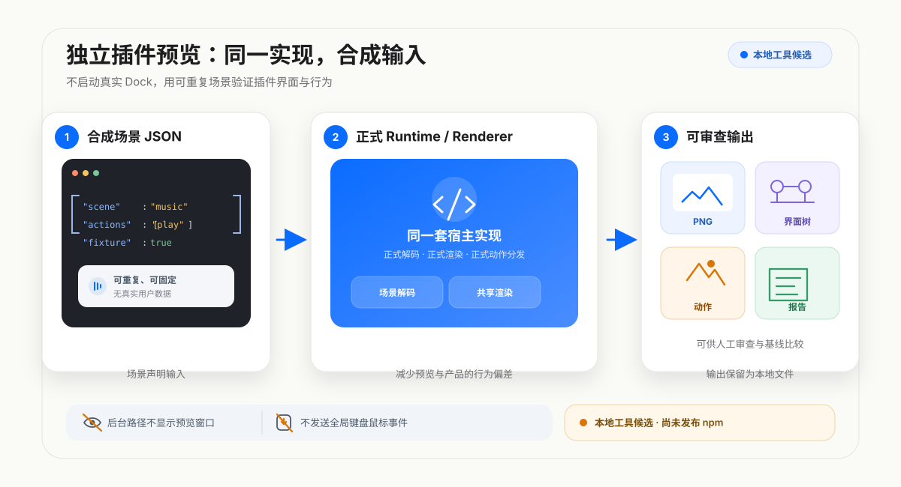

Switchly
Your next window, already in sight.
原生 macOS 菜单栏应用——先看见窗口，再切换过去。
下载 macOS 版 插件开发文档macOS 12+ · MIT 开源 · 无账号、不上传窗口内容 · 在线天气可选且默认关闭




界面截图使用虚构演示内容，由当前源码渲染。
本次更新
看回一天，也截下这一刻。
活动时间线、窗口截图、独立插件预览。先看图，再上手。

顺手的窗口入口
全局窗口预览
⌘ ⌥ P 展开缩略图，搜索并切换；支持全部／当前桌面、原位窗口复刻。跨桌面切换仍待实机验收。
Dock 悬停预览
悬停看窗口，横排、竖排或网格；可选边缘热区与摇动鼠标触发。
工作区
把应用编为 Build / Write / Plan，用快捷键进入。组织窗口入口，不改动系统桌面。
音乐与天气抽卡
封面、3D 点按转盘与播放控制；翻卡听歌。在线天气可选，默认关闭。
原生外观
浅色、深色、跟随系统；透明、磨砂或关闭玻璃。支持减少动态效果。
本地插件与统计
搜索和管理插件，安装本地包；查看键鼠计数与估算节省时间，可随时清除。
九宫格桌面：所有桌面一眼看全

- 八方向切换：四指滑动切到相邻桌面（含斜向），HUD 显示目标位置，方向默认跟随系统自然滑动，可反向。
- 五指下滑看全局：打开总览，点击、方向键或
Return切换；⌃1–⌃9随处直达。 - 手势不打架：开启后接管系统四指滑动，避免双重切换；五指上滑仍打开调度中心，三指拖移不受影响。
- 自定义排布：把一个桌面拖到另一个上互换位置，按显示器分别保存、重启保持；
⌃N与卡片编号仍对应真实桌面。 - 迷路时：四指静置约 1 秒，HUD 高亮当前桌面，不切换。
- 一分钟配置：「偏好设置 → 九宫格」检测辅助功能、屏幕录制、至少两个桌面与系统「切换到桌面」快捷键，缺项一键打开对应设置面板。
默认关闭。接管四指滑动依赖未公开的系统行为；若未来系统变更，关闭「接管系统四指手势」即可恢复。系统滑动动画按真实桌面顺序播放，排布被调整后可能与手指方向相反，开启系统「减少动态效果」可变为淡入淡出。
快速开始
- 从 Releases 下载
Switchly-<version>.zip，解压后将Switchly.app移到「应用程序」。 - 打开后授予辅助功能（查找并聚焦窗口）与屏幕录制（显示缩略图），位于「系统设置 → 隐私与安全性」。
- 在菜单栏偏好设置的「常规 → 窗口来源」选择预览全部窗口，或在「应用」标签添加应用。
- 按
⌘ ⌥ P呼出预览，点击窗口即可切换。冲突时可在偏好设置中修改快捷键。
不需要 Xcode。发布包面向 Apple Silicon 与 Intel 通用，目前仅在 Apple Silicon 上测试。
未配置签名凭据的发布包为 ad-hoc 签名且未公证：请确认来自本仓库 Releases，再用 macOS「仍要打开」。可用
shasum -a 256 -c Switchly-<version>.zip.sha256 校验完整性。没有缩略图时请检查屏幕录制权限；没有任何窗口时检查窗口来源设置。从源码构建
brew install xcodegen # 需要 Xcode 26+、Swift 5.9
git clone https://github.com/leungingit/switchly.git && cd switchly
# 先将 switchly-plugins 克隆到相邻目录
(cd ../switchly-plugins && npm run build)
make bootstrap && make build && make test-unit && make run窗口内容留在你的 Mac 上
- 窗口内容在本地处理：无账号、无在线授权、无遥测 SDK。唯一的联网功能是可选在线天气，默认关闭。
- 缩略图缓存：仅保存压缩小图，自截取起最长 24 小时、磁盘上限 64 MB；放大预览原图不落盘。复用需系统启动会话、目标进程与窗口身份一致。
- 清除：删除
~/Library/Caches/Switchly/Thumbnails/即可；过期文件读取时拒绝并删除。 - 缓存图像可能含窗口内容，未额外加密。详见仓库中的 隐私政策。
参与
遇到无法聚焦的窗口或有新想法？提交 Issue（附 macOS 版本、芯片、相关应用与复现步骤）。贡献请阅读 CONTRIBUTING，安全问题见 SECURITY。